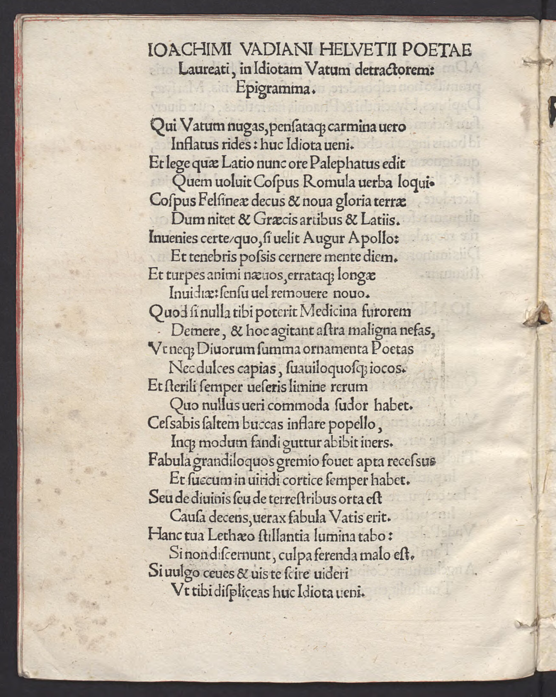

Cospi 2 (Joachim Watt)
Faksimile

Transkription
Ioachimi Vadiani Helvetii Poetae Laureati in Idiotam Vatum detractorem: Epigramma.
Qui Vatum nugas, pensataque carmina vero
Inflatus rides: huc Idiota veni.
Et lege quae Latio nunc ore Palaephatus edit
Quem voluit Cospus Romula verba loqui.
Cospus Felsineae decus et nova gloria terrae
Dum nitet et Graecis artibus et Latiis.
Invenies certe quo, si velit Augur Apollo:
Et tenebris poscis cernere mente diem.
Et turpes animi naevos, errataque longae
Invidiae: sensu vel removere novo.
Quod si nulla tibi poterit Medicina furorem
Demere, et hoc agitant astra maligna nefas,
Ut neque Divorum summa ornamenta Poetas
Nec dulces capias, suaviloquosque iocos.
Et sterili semper verseris limine rerum
Quo nullus veri commoda sudor habet.
Cessabis saltem buccas inflare popello,
Inque modum fandi guttur abibit iners.
Fabula grandiloquos gremio fovet apta recessus
Et succum in viridi cortice semper habet.
Seu de divinis seu de terrestribus orta est
Causa decens, verax fabula Vatis erit.
Hanc tua Lethaeo stillantia lumina tabo:
Si non discernunt, culpa ferenda malo est.
Si vulgo ceves et vis te scire videri
Ut tibi displiceas huc Idiota veni.
Übersetzung
Epigramm des Joachim Watt gegen den Stümper, der Sänger schmälert.
Du Aufgeblasener, der du tatsächlich die Spielereien und wohlüberlegten Gedichte der Sänger verlachst: komm hierher, du Stümper! Und lies, was Palaiphatos nun aus lateinischem Munde von sich gibt, von dem Cospi wollte, dass er römische Worte spricht. Cospi ist die Zier und die neue Ehre Bolognas, während er sowohl in griechischen als auch lateinischen Künsten glänzt. Sicherlich wirst du herausfinden, wodurch, wenn der Seher Apollo es möchte: Du forderst, sowohl in der Dunkelheit den Tag im Geiste zu erkennen als auch die schändlichen Male des Geistes und die Irrungen eines langandauernden Neids. Oder <du forderst>, <dies> mit einer neuen Wahrnehmung zu entfernen. Denn wenn keine Medizin dir die Wut nehmen kann, dann treiben böswillige Sterne dieses Unrecht an, dass du weder die höchsten Zierden der göttlichen Dichter noch die süßen und süßklingenden Späße erhaschst. Und immer sollst du dich auf der ertraglosen Schwelle der Dinge aufhalten, auf der keine Mühe den Nutzen der Wahrheit hat. Wenigstens wirst du aufhören, dem Pöbel die Backen aufzublasen, und bei sprachlicher Einschränkung wird die Kehle untätig vergehen. Eine passende Story fördert Rückzugsorte für Großkotze in ihrem Schoß und hat immer Saft in ihrer frischen Rinde. Sei es, dass das passende Thema aus göttlichen oder irdischen Dingen entstanden ist, die wahre Erzählung wird jene des Sängers sein. Diese erkennen deine Augen, die von Vergessenheit bringendem Gift triefen: Wenn sie sie nicht erkennen, muss man dem Bösen die Schuld geben. Wenn du für den Pöbel mit dem Hintern wackelst und du wissen willst, dass es scheint, dass du dir selbst missfällst, dann komm hierher, du Stümper!
Metadaten
| Titel des Gedichts: | Ioachimi Vadiani Helvetii Poetae Laureati in Idiotam Vatum detractorem: Epigramma. |
| Autor der Gedichts: | Joachim Watt (Joachim Vadianus) |
| Containerwerk: | Libellus Palaephati Graeci Authoris quo aliquot veteres fabulae, unde tractae sint narrat, studiosi hominibus apprime utilis, Wien 1514 |
| Autor des Containerwerks: | Angelo Cospi (Angelus Cospus) |
| Gattung des Containerwerks: | Edition, Edition von Peri apiston historion des Palaiphatos, Mythographie |
| Erscheinungsjahr: | 1514 |
| Verschlagwortung: | Tadel, Spott, Latein, Lateinische Übersetzung, Lob, Bologna, Apoll, Poetologie, Medizin, Sterne, Schwelle, Kritik |